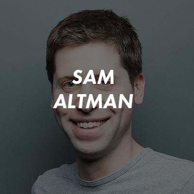
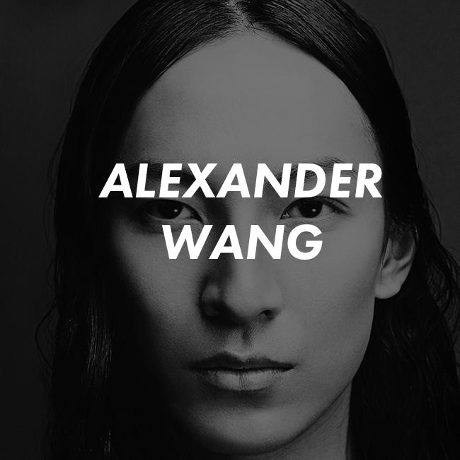

Branding is just as important for small businesses and individuals as it is for big names. From branding techniques in the corporal level to personal branding advices, this year’s speakers comes from the investment, fashion, and entertainment industry. They each have their own way of creating their own ‘brands’, and each have managed to transcend beyond their field with it.
March 27th @7:00pm
RISD Auditorium
SHARED
VOICES
SHARED VOICES The RISD Presidential Speaker Series offers a forum for welcoming some of the most expansive thinkers of our times to campus. Each speaker is a master of his or her domain but is also ready to transcend it, sharing the RISD community’s own belief in the fruitful exchange of ideas that happens when artists, designers, activists, scientists and other scholars really talk and listen to each other.


SAM ALTMAN
President,
Y Combinator
Altman—a Y Combinator grad himself who built and sold (for $43.4 million) a moderately successful location-based services company called Loopt – officially took over the accelerator in February and has big plans to expand the number of companies in the program by a factor of 10 over the next decade. “We want to have an impact. It’s cool that you can make a list of the problems in the world and then fund companies to solve them.”
ALEXANDER WANG

Designer, Alexander Wang & Balenciaga
Since Alexander Wang is creative director of the eponymous label he launched in 2005, aged 19. In December 2012, it was announced Wang would succeed Nicolas Ghesquière as creative director of Balenciaga.
Wang’s meteoric ascent through fashion’s rank and file hails him not only as the poster boy of fashion’s new establishment, but as one of fashion’s greatest sensations so far this century.
EMMA WATSON
Actor,Goodwill Ambassador
Watson has come a long way since Hogwarts. She’s finding her niche as an actor, appearing in films like "The Bling Ring" and "Noah." Last summer, Watson was named UN Women Goodwill Ambassador. Her speech before the UN on behalf of the HeForShe campaign went viral and established the 24 year old as an important advocate for gender equality. Somehow, she also found time to graduate from Brown University.